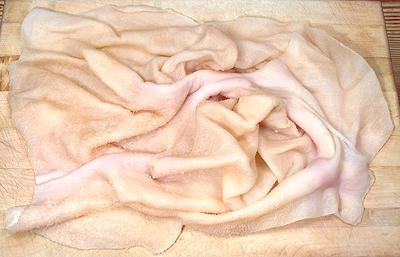

Lamb Tripe

[Lamb Stomach]
This is the lining of the lamb's stomach. It is similar to beef tripe
but there's only one kind and it's a lot thinner. It does not, however,
take any less time to cook, in fact it seems to take more. The photo
specimen was about 16 inches by 14 inches and weighed 1-1/2 pounds.
More on Lamb Innnards.
Lamb tripe straight from the lamb is dark olive green, crusty and needs
a lot of scraping and cleaning, just like tripe from a cow. The lamb tripe
sold in California is already factory cleaned and pretty much ready to go,
but is generally not bleached as white as cow tripe is.
Incidentally, natural unscraped green tripe from lambs and cows is a
common ingredient in upscale dog foods, and that's the way the dogs like
it, but people prefer it well scraped and cleaned with all the green gone.
Buying:
Lamb Tripe is to be found in markets serving a
Middle Eastern, Persian, Pakastani, Armenian, Turkish, North African or
other lamb focused community. It will generally be packaged one piece to
a foam tray.
Cooking:
For best results, follow this method:
- Wash the tripe and pick off any remaining fat and fiber, generally from
the folds.
- Soak in cold water acidulated with lemon juice or citric acid for an
hour or so.
- Put tripe in a pot with cold water, bring to a boil and simmer 20
minutes.
- Clean the pot,
- If the tripe is going into a long cooking recipe it can go in at this
point. If it must be fully cooked first, then refill the pot with cold
water, put in the tripe (it can be cut at this point)
and cook until done - another 3 to 5 hours.
as_tripez 091015 - www.clovegarden.com
©Andrew Grygus - agryg@clovegarden.com - Photos
on this page not otherwise credited © cg1
- Linking to and non-commercial use of this page permitted